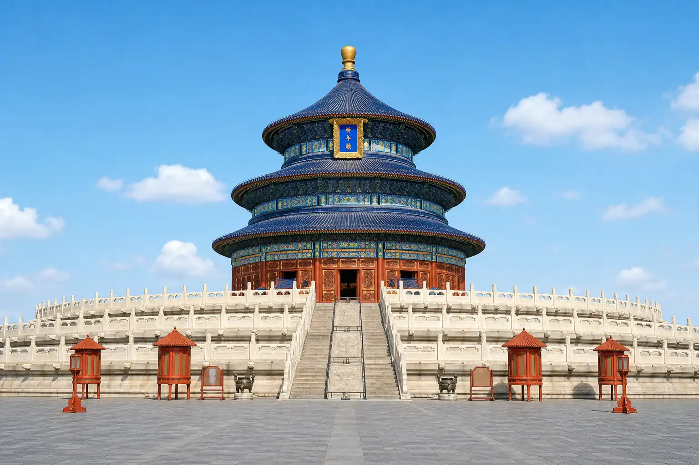
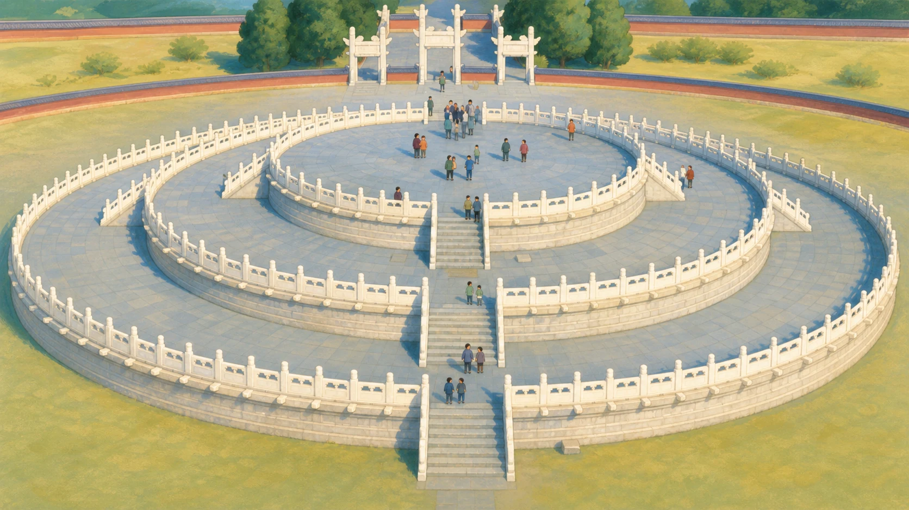
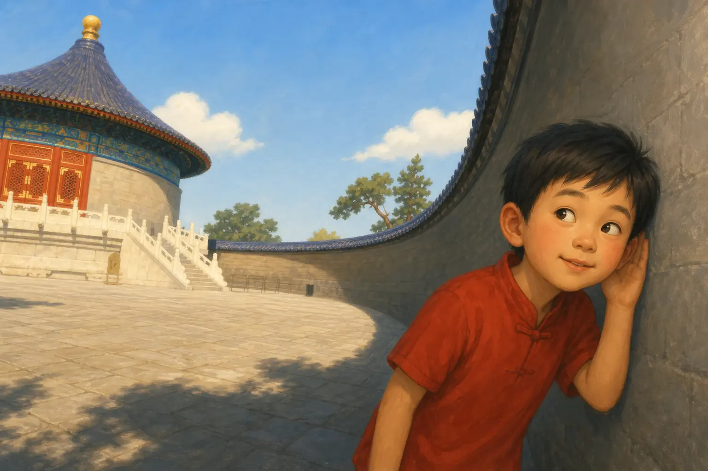

天坛：皇帝真的在和天空说话吗？
The Temple of Heaven: Was the Emperor Talking to the Sky?
阅读难度 · 困难Reading level · Hard
Page 1
蓝顶大殿不是整个天坛
The Blue Hall Is Not the Whole Temple

This modern image shows the Hall of Prayer for Good Harvests with its blue tiles, red columns, and three round roofs. It is the Temple of Heaven's best-known building, but only one part of the complex.
如果你只看过一张天坛照片，多半看见的是祈年殿：蓝色圆顶一层托着一层，红柱站在白石台上，像把天空拉到了屋檐边。可是假如你走到殿前就说“天坛看完了”，就像只看了学校礼堂便说自己认识整所学校。天坛不是一座庙，而是一大片为皇家祭礼安排的建筑、祭坛、道路和院落。
名字里的“天”也不只是头顶的蓝天或今天的天气。明清两代的皇帝自称“天子”，也就是“天之子”。在当时的国家礼仪中，他要代表王朝向“天”行礼，祈求五谷丰收，并表示人间的统治应当配合一种更大的秩序。因此，说皇帝来这里“和天空说话”很吸引人，却不能把它想成一场关于晴雨的聊天。
If you have seen only one picture of the Temple of Heaven, it probably showed the Hall of Prayer for Good Harvests. Its blue roofs rise above red columns and a white stone terrace, almost as if the sky had come down to meet the building. But stopping there and saying, “I’ve seen the Temple of Heaven,” would be like seeing a school auditorium and thinking you knew the whole school. The Temple of Heaven is a large complex of altars, halls, courtyards, and ceremonial roads - not a single temple building.
“Heaven” meant more than the blue sky or tomorrow’s weather. Ming and Qing emperors called themselves Sons of Heaven. In the state rituals held here, an emperor represented his dynasty before Heaven, prayed for good harvests, and showed that human rule was supposed to fit within a greater order. So “talking to the sky” is a catchy way to begin, but this was not a friendly chat about rain.
Page 2
一条路，三种不同任务
One Route, Three Different Jobs
现在让我们从南向北走。最南边的圜丘坛是一座露天圆形石坛，皇帝在冬至祭天时会到这里。它北边的皇穹宇不是另一个祈年殿，而是供放祭天神牌的地方。再沿着高起的丹陛桥向北走，才会到祈年殿；这里举行的是祈谷礼，希望来年有好收成。
附近还有斋宫和神乐署。斋宫供皇帝在大礼前准备和斋戒，神乐署则与礼仪音乐及乐舞人员有关。把这些地方连起来看，天坛就不再是一组漂亮的旅游照片：储放礼仪物品的人、准备音乐的人、安排道路和仪程的人，都要让一场国家大礼按规定进行。建筑在这里不只是背景，它像一张巨大的流程图，告诉每个人何时停、往哪里走、在哪一种空间里做什么。
Now imagine walking from south to north. At the southern end stands the Circular Mound Altar, an open-air stone platform used for the winter-solstice ceremony honoring Heaven. Just north of it is the Imperial Vault of Heaven, which stored sacred tablets used in the ceremony. Continue along the raised Danbi Bridge and you eventually reach the Hall of Prayer for Good Harvests, where a different ritual asked for a successful grain harvest.
Other buildings had their own jobs. The Hall of Abstinence was where the emperor prepared before major ceremonies. The Divine Music Administration was connected with ritual music and the people trained to perform it. Put the places together and the Temple of Heaven stops looking like a set of beautiful vacation photos. It becomes a carefully organized world in which objects had to be stored, music prepared, routes followed, and ceremonies performed in the proper spaces. The architecture worked almost like a giant flowchart.
Page 3
这组建筑一直在改变
A Complex That Kept Changing
这张“流程图”也不是一开始就长成今天的样子。最早的祭坛在 1420 年建成，当时祭天和祭地还放在一起。1530 年，明朝嘉靖皇帝决定把祭天与祭地分开，并修建圜丘坛；几年后，这里才改称天坛。到了清朝，皇帝们又扩建、改名和重修，18 世纪中期才大体形成我们今天熟悉的布局。
甚至最著名的祈年殿，也不是 15 世纪的原木原瓦一直保存到现在。1889 年，它被雷火烧毁，后来按照原来的形式重建；20 世纪又经历过修缮。站在今天的殿前，我们看到的既有古老的设计，也有后来工匠的重建和保护。世界遗产不是装在玻璃盒里的“旧东西”，而是一代代人接力照看的历史现场。
This architectural “flowchart” did not appear all at once. The first altar complex was completed in 1420, when rites for Heaven and Earth were still held together. In 1530, the Ming emperor Jiajing separated the two kinds of worship and ordered the Circular Mound Altar built. The place was renamed the Temple of Heaven a few years later. Qing emperors then enlarged, renamed, and rebuilt parts of the complex. Its familiar arrangement took shape through major work in the 1700s.
Even the famous Hall of Prayer is not made of the same untouched wood and tiles that stood there in the 1400s. Lightning started a fire that destroyed the hall in 1889, and it was later rebuilt in its earlier form. More repairs followed in the 1900s. What visitors see today combines an old design with the work of later builders and conservators. A World Heritage site is not an ancient object sealed in a glass box. It is a historic place that many generations have worked to protect.
Page 4
九、圆形和蓝色都有答案吗？
Do Nine, Circles, and Blue Have One Answer?

This modern illustration shows the Circular Mound Altar's three round levels. On the real altar, many stones, steps, and railings use nine or multiples of nine.
登上圜丘坛，你会发现设计者反复使用圆形。天坛北面的坛墙呈半圆形，南面较方，常用“天圆地方”来解释：古人用圆与方表现自己对天、地和宇宙秩序的理解。圜丘坛的石板、台阶和栏板还大量使用九或九的倍数；官方资料把这种安排与“九重天”以及天的尊贵地位联系起来。
这些设计不是随手拼出来的，但读象征也要小心。网上常见的表格会告诉你：每一种颜色、每一根柱子、每一个数字都只有一个固定答案。真实历史没有那么整齐。有些解释有礼制文献和建筑布局支持，有些是后人提出的说法，不同时代的解释也可能改变。看天坛最好的方法不是背一串“神秘数字”，而是问：哪些图案不断出现？可靠资料怎样解释它？还有哪些答案需要保留一点问号？
Climb the Circular Mound Altar and you will see curves everywhere. The northern end of the Temple of Heaven’s outer wall is rounded, while the southern end is more square. This is often explained through the old idea of “round Heaven and square Earth,” in which circles and squares helped people picture the order of the universe. Many paving stones, steps, and railings at the altar also use nine or multiples of nine. Official descriptions connect that pattern with the nine levels of Heaven and with Heaven’s high rank.
The patterns were not chosen at random, but symbols need careful reading. Online lists often claim that every color, column, circle, and number has one fixed meaning. History is rarely that tidy. Some interpretations are supported by ritual records and the buildings themselves. Others were suggested later, and meanings could change over time. Instead of memorizing a chart of “mystical numbers,” a better explorer asks: Which patterns truly repeat? What do reliable sources say about them? Where should we leave a question mark?
Page 5
回音壁不是语音电话
The Echo Wall Is Not a Stone Telephone

This is a modern imagined scene. The real Echo Wall surrounds the Imperial Vault courtyard, and its sound effect is easier to hear when the courtyard is quiet and listeners stand close to the wall in suitable spots.
来到皇穹宇院落，你也许会看见游客把耳朵贴近回音壁。圆墙内侧平整而坚硬，声音碰到墙面后会发生反射；在合适的位置，一部分声音能沿着弧形墙面传播到较远处。20 世纪的实地声学测试也发现，院墙的反射和会聚能让某些地点之间的说话声变得格外清楚。
不过，回音壁不是石头做的电话，更不是每次都成功的魔法。两个人若离墙太远，院里挤满说话的游客，或者周围噪声太大，轻声传话就很难听清。皇穹宇前的“三音石”也会产生多次反射声，但你实际听到几声，会受站位、声音大小和环境影响。我们可以确定圆形院墙造成了有趣的声学现象，却不能因此断定明代工匠早已算出全部现代声学公式，或保证每个游客都能听见整齐的一、二、三声。
In the Imperial Vault courtyard, you may see visitors placing their ears close to the Echo Wall. The inside surface is hard, smooth, and curved. Sound reflects from it, and in suitable positions some of that sound can travel around the wall to a listener farther away. Field tests in the 1900s also found that reflections from the courtyard wall can focus speech between certain locations.
But the Echo Wall is not a stone telephone, and it does not perform magic on command. If people stand too far from the wall, the courtyard is packed with talking visitors, or background noise is loud, a whisper may be hard to hear. The so-called Three Echo Stones near the Imperial Vault can also produce repeated reflections, but the number you hear depends on position, loudness, and the surroundings. The curved walls create real and delightful sound effects. That does not prove the Ming builders knew every modern acoustics formula, and it does not promise every visitor a perfect one-two-three echo.
Page 6
与其数钉子，不如看木架怎样合作
Don't Count Nails - Watch the Frame Work
祈年殿里，柱子、梁、斗栱和榫卯接头组成主要的木构架。榫头插进卯眼，许多木构件彼此咬合，再把沉重屋顶的力量一层层传到柱子和台基。这种搭法能让接头在受力时发生一点转动和挤压，是中国传统木建筑的重要本领。
你也许听过“整座大殿没有一颗钉子”的说法。它抓住了榫卯很重要这一点，却说得太满。祈年殿曾经重建，也多次修缮；传统建筑包含许多不同部位，保护工程还可能采用金属构件或其他加固办法。真正值得惊叹的不是完成一场“找不到钉子”的比赛，而是工匠怎样让柱、梁、斗栱、接头和屋顶一起工作。建筑的聪明藏在整个系统里。
Inside the Hall of Prayer, columns, beams, bracket sets, and mortise-and-tenon joints form the main timber frame. A projecting tenon fits into a matching opening called a mortise. Many pieces interlock, carrying the heavy roof’s weight down through the columns to the terrace. These joints can shift and press against one another slightly under force, an important feature of traditional Chinese timber building.
You may have heard that “the entire hall was built without a single nail.” That slogan notices the importance of joinery, but it claims too much. The hall has been rebuilt and repaired more than once. A traditional building also has many different parts, and conservation projects may use metal pieces or other kinds of reinforcement. The real wonder is not winning a “find the nail” contest. It is seeing how columns, beams, brackets, joints, and roof work together as one system.
Page 7
谁在“说话”？建筑也在说
Who Was Speaking? The Architecture Was, Too
现在再回到开头的问题：皇帝真的在和天空说话吗？他确实会在天坛举行向天行礼、诵读祭文和祈求收成的国家仪式；但这里的“天”不是一片会回答问题的蓝色空气，仪式也不只是皇帝个人的愿望。它同时向参加者展示一种政治观念：皇帝自称连接天与人间，却也必须按照礼仪在特定地点行动。
所以，天坛里不只有人的声音。通向祭坛的轴线、露天的圆台、蓝色屋顶、反复出现的数字，以及大殿下互相配合的木构件，都在无声地表达秩序。今天的孩子不必接受古代皇帝的信念，也能读懂这座建筑提出的问题：一个国家怎样用空间讲述自己的世界观？而我们又该怎样分清可靠证据、后来的解释和一个讲得太顺口的传奇？
Now return to the opening question: Was the emperor really talking to the sky? He did take part in state ceremonies that honored Heaven, included spoken ritual texts, and asked for good harvests. But Heaven was not a patch of blue air expected to answer back, and the ritual was more than one man’s private wish. It also displayed a political idea: the emperor claimed to connect Heaven and the human world, yet even he had to move through prescribed spaces and follow ritual rules.
People were not the only ones “speaking” at the Temple of Heaven. The long central route, open round altar, blue roofs, repeated numbers, and interlocking timber frame all communicated order without words. Children today do not have to share an emperor’s beliefs to understand the question built into this place: How can a government use space to tell a story about the universe - and how can we separate strong evidence from later explanations and legends that sound a little too perfect?
小结
In Summary
天坛不是一座“会回音的蓝房子”，而是一整套为明清皇家祭礼服务的空间。圜丘坛、皇穹宇和祈年殿各有任务，建筑又在几百年间不断改建、焚毁、重建和修缮。读懂天坛，既要看圆、方、数字、声音和木结构，也要学会给太整齐、太神奇的说法留一个问号。
The Temple of Heaven is not simply “the blue building with the echo trick.” It is an entire landscape designed for Ming and Qing state rituals. The Circular Mound Altar, Imperial Vault, and Hall of Prayer each had a different job, and the complex changed through centuries of rebuilding and repair. To understand it, we can study its circles, squares, numbers, sounds, and timber frame - while keeping a question mark beside claims that sound too neat or too magical.